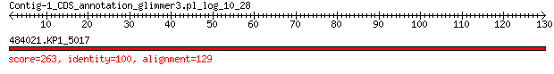

bitscore colors: <40, 40-50 , 50-80, 80-200, >200
 BLASTP 2.2.31+
Reference: Stephen F. Altschul, Thomas L. Madden, Alejandro A.
Schaffer, Jinghui Zhang, Zheng Zhang, Webb Miller, and David J.
Lipman (1997), "Gapped BLAST and PSI-BLAST: a new generation of
protein database search programs", Nucleic Acids Res. 25:3389-3402.
Reference for composition-based statistics: Alejandro A. Schaffer,
L. Aravind, Thomas L. Madden, Sergei Shavirin, John L. Spouge, Yuri
I. Wolf, Eugene V. Koonin, and Stephen F. Altschul (2001),
"Improving the accuracy of PSI-BLAST protein database searches with
composition-based statistics and other refinements", Nucleic Acids
Res. 29:2994-3005.
Database: eggnogv4.proteins.all.fa
14,875,530 sequences; 5,112,597,290 total letters
Query= Contig-1_CDS_annotation_glimmer3.pl_log_10_28
Length=129
Score E
Sequences producing significant alignments: (Bits) Value
484021.KP1_5017 263 3e-88
> 484021.KP1_5017
Length=129
Score = 263 bits (671), Expect = 3e-88, Method: Compositional matrix adjust.
Identities = 129/129 (100%), Positives = 129/129 (100%), Gaps = 0/129 (0%)
Query 1 MAKAPIRARKRVRKQVSDGVAHIHASFNNTIVTITDRQGNALGWATAGGSGFRGSRKSTP 60
MAKAPIRARKRVRKQVSDGVAHIHASFNNTIVTITDRQGNALGWATAGGSGFRGSRKSTP
Sbjct 1 MAKAPIRARKRVRKQVSDGVAHIHASFNNTIVTITDRQGNALGWATAGGSGFRGSRKSTP 60
Query 61 FAAQVAAERCAEAVKEYGIKNLEVMVKGPGPGRESTIRALNAAGFRITNITDVTPIPHNG 120
FAAQVAAERCAEAVKEYGIKNLEVMVKGPGPGRESTIRALNAAGFRITNITDVTPIPHNG
Sbjct 61 FAAQVAAERCAEAVKEYGIKNLEVMVKGPGPGRESTIRALNAAGFRITNITDVTPIPHNG 120
Query 121 CRPPKKRRV 129
CRPPKKRRV
Sbjct 121 CRPPKKRRV 129
Lambda K H a alpha
0.318 0.132 0.394 0.792 4.96
Gapped
Lambda K H a alpha sigma
0.267 0.0410 0.140 1.90 42.6 43.6
Effective search space used: 125780345960